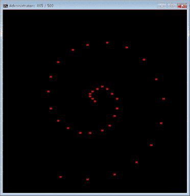

Search found 5870 matches
- 22 Oct 2016 21:52
- Forum: DOS Batch Forum
- Topic: RdRand.exe: Robust random numbers for Batch files
- Replies: 19
- Views: 3134
Re: RdRand.exe: Robust random numbers for Batch files
She no go here. Intel(R) Core(TM) i7-2600 CPU @ 3.40GHz Windows 8.1 32 bit Is 32 bit an issue? I wouldn't have thought so. Looks like your processor predates the Ivy Bridge entropy chip. Is that a bit like the TARDIS chamelon circuit?? My CPU might not support the feature it uses but I thought I sa...
- 22 Oct 2016 07:45
- Forum: DOS Batch Forum
- Topic: RdRand.exe: Robust random numbers for Batch files
- Replies: 19
- Views: 3134
Re: RdRand.exe: Robust random numbers for Batch files
She no go here. Intel(R) Core(TM) i7-2600 CPU @ 3.40GHz Windows 8.1 32 bit Is 32 bit an issue? I wouldn't have thought so. c:\Files>rdrand c:\Files>echo %errorlevel% 0 c:\Files>rdrand c:\Files>echo %errorlevel% 0 Downloaded second copy to compare. Comparing files C:\FILES\RdRand.zip and C:\FILES\RDR...
- 21 Oct 2016 13:06
- Forum: DOS Batch Forum
- Topic: Conversion of batch to another language, then compile to an exe
- Replies: 8
- Views: 1880
Re: Conversion of batch to another language, then compile to an exe
ShadowThief wrote:it really depends on the code they're trying to port.
I think I drifted off onto automated conversion but manual porting of code should be doable.
Automated conversion of simple scripts might work...without any reliability and it would be a case of suck-it-and-see.
- 21 Oct 2016 09:40
- Forum: DOS Batch Forum
- Topic: Output into a single line
- Replies: 2
- Views: 877
Re: Output into a single line
I thought it'd be a piece of cake Sqaushman and went to write a few lines to play with, and then that stoopid wmic bug stepped in with it's non-ansi text and screwy line endings. This seems to work in my limited testing @echo off SET output=C:\temp\DevNet_RAM.txt echo Output file will be in %output%...
- 21 Oct 2016 05:37
- Forum: DOS Batch Forum
- Topic: Help with Auditing Script
- Replies: 5
- Views: 1181
Re: Help with Auditing Script
Thank you for the quick reply and fix recommendations. I have implemented the fixes as suggested For /f "tokens=1 delims=,\ " %%i in (%fileName%) do if not exist \\%%i\c$\Temp mkdir \\%%i\c$\Temp For /f "usebackq tokens=1 delims=,\ " %%i in ("%fileName%") do cscript Ap...
- 21 Oct 2016 05:12
- Forum: DOS Batch Forum
- Topic: We can use bash in our scripts now in Win10
- Replies: 20
- Views: 4775
Re: We can use bash in our scripts now in Win10
Work supplies me with a laptop which has Windows 7.
Ahh.
Doubt we will upgrade to Windows 10 anytime soon.
That's how I feel about it.
- 20 Oct 2016 18:55
- Forum: DOS Batch Forum
- Topic: Help needed- replacing text in files having Newline and double quote
- Replies: 1
- Views: 896
Re: Help needed- replacing text in files having Newline and double quote
I need to make a small replacement in an XML file using DOS program. There is already a batch file made (REPL.BAT) which does replacements excellently The author of repl.bat has created Jrepl.bat and he is a regular here on Dostips named Dave Benham Jrepl is an enhanced version of repl and they bot...
- 20 Oct 2016 18:42
- Forum: DOS Batch Forum
- Topic: Conversion of batch to another language, then compile to an exe
- Replies: 8
- Views: 1880
Re: Conversion of batch to another language, then compile to an exe
In the same way that penpen discusses, batch files have so many undocumented techniques that a language conversion using automated means is unlikely to be feasible. But thankfully, them being undocumented means that most people don't know about them, which means that most people don't use them, whi...
- 20 Oct 2016 11:55
- Forum: DOS Batch Forum
- Topic: We can use bash in our scripts now in Win10
- Replies: 20
- Views: 4775
Re: We can use bash in our scripts now in Win10
Windows Anniversary update it broke Quick Books so I had to roll back until my wife decides to update Quick Books to the latest version. It might be cheaper to get a new wife. ...Erm, ahhh, the devil made me type that. I'm kidding Squashman and your wife is so crook so I wouldn't be so callous. But...
- 20 Oct 2016 08:14
- Forum: DOS Batch Forum
- Topic: JREPL.BAT v7.14 - regex text processor now with Unicode and XRegExp support
- Replies: 392
- Views: 131472
Re: JREPL.BAT - regex text processor - successor to REPL.BAT
thanks for continuous update dave What'd be good is a counter for thanks and appreciation that people can click. I feel it would be pretty darn high with many clicks. I'd like to see a counter for Aacini as well. He's given just as much effort as Dave, in many areas. There are many people who have ...
- 20 Oct 2016 07:55
- Forum: DOS Batch Forum
- Topic: Emailing using Bat script
- Replies: 2
- Views: 797
Re: Emailing using Bat script
If you reply to comment on third-party tools or vscript then you'll get further help.
Your question as it stands gives no clues about authentication required or other details about your question.
Your question as it stands gives no clues about authentication required or other details about your question.
- 20 Oct 2016 06:19
- Forum: DOS Batch Forum
- Topic: Help with Auditing Script
- Replies: 5
- Views: 1181
Re: Help with Auditing Script
There is a potential flaw here in that a space exists before text in the predefined variable called filename. set fileName= computers.txt The main problem is in statements like this FOR /f "tokens=l delims=,\ " %%i in (computers.txt) do copy \\%%i\c$\Temp\*.evt For robust code where comput...
- 20 Oct 2016 04:43
- Forum: DOS Batch Forum
- Topic: Fastest sin(x) in dos batch
- Replies: 36
- Views: 11210
Re: Fastest sin(x) in dos batch
einstein1969 wrote:neorobin wrote:Hi einstein1969
I made another implementation
...
spiral

That's so simple in motion but it really appeals to me. Very nice!
- 20 Oct 2016 04:19
- Forum: DOS Batch Forum
- Topic: FINDSTR woes with blank lines
- Replies: 13
- Views: 2778
Re: FINDSTR woes with blank lines
I rattled my cage without looking at your code and I see there are many comments. I want to point out here that using :: inside a loop for a remark can cause the script to fail. Get used to using :: outside loops and rem when adding remarks inside loops and you won't strike that problem. FOR /f &quo...
- 20 Oct 2016 04:08
- Forum: DOS Batch Forum
- Topic: FINDSTR woes with blank lines
- Replies: 13
- Views: 2778
Re: FINDSTR woes with blank lines
Make sure that you test Compo's script though and let him know how you go.